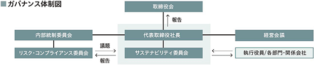

文中の将来に関する事項は、当連結会計年度末現在において、当社グループが判断したものであります。
(1) 会社の経営の基本方針
当社グループは、経営理念、経営ビジョン、行動指針からなる理念体系の下、当社グループ全員がそれらを理解し、目標と価値観を共有して行動してまいります。優れた生産活動を通じて地域社会の秩序を守り、社会と産業界の進歩と発展に貢献することにより、ステークホルダーの皆様の期待に応え続ける企業であることを目指してまいります。
(2) 目標とする経営指標
当社グループでは、2015年11月期に開始した前中期経営計画（Next Stage 10）を１年前倒しとなる2023年11月期にて終了し、2024年11月期より2030年11月期までの新中期経営計画Progress ＆ Development 2030（P&D 2030）をスタートいたしました。
新中期経営計画 P&D 2030において、その目標を下記のとおり設定しております。
(3) 経営戦略、経営環境及び対処すべき課題
今後の見通しにつきましては、日本経済は新型コロナウイルス感染症の影響からの回復局面にある一方で、中国を中心とした海外の景気減速の可能性や、燃料や原材料価格の高騰等による物価高、ウクライナ情勢や中東情勢等の地政学的リスクの高まり等により、依然として先行きの不透明な状況が続くと予想されます。
このような情勢の下、新中期経営計画 P&D 2030では、当社グループの経営理念のもと、「特殊アクリル酸エステルのリーディングカンパニーとして、グローバル市場に価値を提供する」という経営ビジョンを掲げ、ESGに配慮したサステナブル経営を推進してまいります。
事業領域における基本戦略といたしましては、最先端半導体材料の開発を加速させ、周辺材料への展開により半導体事業の拡大、LCD用レジスト設計技術の非ディスプレイ用途への展開、親水性ポリマー技術の生体適合材料や新規電子材料用途への展開、有機圧電材料や伸縮性エラストマー材料に関する他機関やメーカーとの連携、新規市場投入等により重点領域を拡充いたします。
また、バイオマスアクリレートの開発、川下化、非化石原料由来のアクリル酸開発、完全非化石由来材料への挑戦、LCAなどの環境データ開示による環境社会へ向けた材料開発に取り組んでまいります。
海外戦略の強化として、中国、韓国、北米への販売会社設置、現地生産を含むチャネル戦略の強化、化粧品材料を中心としたASEAN・インドなどへの販路拡大を図ってまいります。
非事業領域におきましては、カーボンニュートラルに向けた施策の実行、廃棄物の削減、資源再利用等によるサーキュラーエコノミー実現に向け持続可能な社会への貢献を目指します。
IT、DXの推進により、品質向上、トラブル防止、安全性の向上や生産性の向上に取り組むとともに、労働環境や働き方の最適化による社員の働きがいやエンゲージメントの向上、雇用の多様化に向けた仕組みづくり、環境や戦略に合わせた教育、人材育成などの人的資本経営を実行してまいります。
また、コンプライアンスの徹底、サプライチェーンの強靭化、BCPの実行性強化などのリスクマネジメントの強化を図ってまいります。
当社グループのサステナビリティに関する考え方及び取組は、次のとおりであります。
なお、文中の将来に関する事項は、当連結会計年度末現在において当社グループが判断したものであります。
当社レジリエンスに関わる活動に関し、活動を行う組織として、サステナビリティ委員会を設置しております。この組織は代表取締役社長をリーダーとした組織横断的なメンバーで構成されております。
基本方針などの重要事項は取締役会にて審議・決議し、それ以外はサステナビリティ委員会にて協議を行っております（年２回）。協議内容は取締役会へ報告し（年２回）、必要な場合は審議・承認を行っております。

当社グループは、サステナブル経営の推進に向け、長期経営目標として、E（環境）S（社会）G（ガバナンス）と生産性、安全性の５つの分野からKPIを設け、CSR重要課題であるマテリアリティから、中期方針、行動指針を設定し取り組んでおります。
マテリアリティについての取り組みの詳細は、当社ホームページに掲載の 2023年版 統合報告書をご参照ください。
当社グループは、各部門の特性や政治・社会情勢等、事業を取り巻く環境を考慮し、サステナビリティに関するリスクを含むリスクの洗い出しを実施しております。リスクの洗い出しを基に、発生の可能性と事業の影響度の観点からリスク評価を実施した上で、リスクマップを作成し「事業等のリスク及び重要リスク」を選定しております。新しいリスクが判明した場合、まず、リスク・コンプライアンス委員会にて議論し、TCFD関連と判断された場合、サステナビリティ委員会にてシナリオ分析・重要リスクの抽出を実施しております。
気候変動が当社グループの事業に及ぼす機会・リスクについて、分析条件を元にTCFDの枠組みに沿ってシナリオ分析を実施しました。分析条件は、気候変動抑制の為に様々な施策がとられるシナリオ(1.5℃シナリオ)と何も施策を講じないシナリオ(4℃シナリオ)の２つのシナリオを設定しました。また、当社の事業セグメントに対しても、同条件で機会・リスクを抽出しました。
■1.5℃シナリオ（移行リスク）
■4.0℃シナリオ（物理リスク）
■事業セグメントに対する機会/リスク
当社グループは、脱炭素社会に向けた気候変動への対応を重要課題に掲げており、2021年に当社で発足したカーボンニュートラル実現検討委員会により中長期的な目標を設定しました。また、当社の事業セグメントに対して、これまで行ってきた合理化・省エネ化に加え、目標達成のための具体的施策を以下のように設定し、これらを実現していく事でカーボンニュートラル達成を実現してまいります。
＜CO2削減目標と施策＞
「ユニークな機能を備えた材料の提供」と「優れた生産活動」を通じて、「会社の成長と持続可能な社会の実現」に貢献することを目指し、以下に示す人材の確保と環境づくりに取り組みます。
＜期待する人材像＞
１．仕事に対する自らの役割を認識し、責任をもって行動する人材
２．個性を発揮し、熱意と意欲を持ち続ける人材
３．自らの人格と能力を磨くと共に、互いに支えあえる人材
＜人材育成方針＞
当社は創業以来、社是に謳っている通り会社と従業員は運命共同体であり、従業員は会社にとって貴重な経営資本と捉えています。この考えのもと、期待する人材の確保と環境づくりのために、様々な経験と知識、能力を有した人材の「採用」と「育成」の強化を図ると共に、「多様性への理解と促進」に取り組みます。更に個人が「自律的なキャリア形成」を通して仕事との関わり方について主体的に考え行動することを支援し、従業員による社会的価値の創造を促していきます。
当社は、多様な人材の確保と育成の実効性をモニタリングする為に、以下の通り、人的資本に関する指標を設定し、進捗を評価しております。
なお、以下の目標数値および実績については提出会社単体の数字であります。
※ 管理職には、課長級以上の階層者を含みます。
※ 2023年の当社基準の付加価値額を全社員総労働時間で除した値を100とする指数で記載しております。
有価証券報告書に記載した事業の状況、経理の状況等に関する事項のうち、経営者が連結会社の財政状態、経営成績及びキャッシュ・フローの状況に重要な影響を与える可能性があると認識している主要なリスクは、以下のとおりであります。
なお、文中の将来に関する事項は、当連結会計年度末現在において当社グループ（当社及び連結子会社）が判断したものであります。
(1) 経営成績等の状況の概要
当連結会計年度における当社グループ（当社及び連結子会社)の財政状態、経営成績及びキャッシュ・フロー（以下、「経営成績等」という。）の状況の概要は次のとおりであります。
① 財政状態及び経営成績の状況
当連結会計年度におけるわが国経済は、新型コロナウイルス感染症の５類感染症への移行などに伴い、経済活動が徐々に正常化へ向かい、景気は緩やかな回復傾向が続いております。しかしながら、中国経済の停滞や原材料・エネルギー価格の高騰などによる物価高、地政学的リスクの高まりなどにより、依然として不透明な状況が続くと考えられます。
このような状況の下で当社グループは、2020年11月期よりスタートした、長期経営計画「Next Stage 10」の後半となる、第２次５ヶ年中期経営計画を推進し、各種施策に取り組んでまいりました。化成品事業におきましては、選択と集中による製品の新陳代謝を図り、採算性の向上に努めるとともに、グローバルに市場が拡大するUVインクジェットプリンター向け特殊インク用原料やバイオマス由来などの環境に配慮した製品の拡販に注力いたしました。電子材料事業におきましては、次世代半導体材料開発の強化によるトップシェアの確保及び新規ディスプレイ材料の拡販に努めてまいりました。機能化学品事業におきましては、機能性ポリマーの開発を促進するとともに、化粧品原料や高純度特殊溶剤の拡販に取り組んでまいりました。しかしながら、ディスプレイや半導体などの電子材料用途を中心に需要の低迷の影響を大きく受けております。
この結果、当連結会計年度の売上高は289億７百万円（対前年同期比10.3％減）、営業利益は35億７千７百万円（対前年同期比39.7％減）、経常利益は38億７千７百万円（対前年同期比39.1％減）、親会社株主に帰属する当期純利益は32億７千万円（対前年同期比30.8％減）となりました。
セグメントごとの経営成績は、次のとおりであります。（セグメント間取引を含んでおりません。）
化成品事業におきましては、アクリル酸エステルグループは、自動車生産の回復に伴い、自動車用塗料向けの販売が堅調に推移いたしました。一方で、ディスプレイ用粘着剤向けやUVインクジェット用インク向けの販売が減少いたしました。メタクリル酸エステルグループは、販売が大幅に減少いたしました。この結果、売上高は103億１百万円（対前年同期比6.7％減）、セグメント利益は９億４千７百万円（対前年同期比16.5％増）となりました。
電子材料事業
電子材料事業におきましては、半導体材料グループは、最先端のEUVレジスト用原料は好調に推移いたしました。しかしながら、主力であるArFレジスト用原料は、末端市場の需要減少による在庫調整の長期化のため、販売が低調に推移し、グループ全体の売上高は減少いたしました。表示材料グループは、ディスプレイの需要の低迷により販売が低調に推移いたしました。この結果、売上高は127億７千７百万円（対前年同期比16.1％減）、セグメント利益は16億６千３百万円（対前年同期比56.2％減）となりました。
機能化学品事業
機能化学品事業におきましては、化粧品原料グループは、販売が海外で好調に推移いたしました。機能材料グループは、受託品の販売が低調に推移いたしました。子会社の高純度特殊溶剤の販売は堅調に推移いたしました。この結果、売上高は58億２千８百万円（対前年同期比2.5％減）、セグメント利益は９億７千３百万円（対前年同期比25.1％減）となりました。
当連結会計年度の総資産は、前連結会計年度に比べて18億円増加し、546億３千６百万円となりました。主として売掛金の減少８億５千２百万円、有形固定資産の増加19億７千２百万円及び投資有価証券の増加８億８千１百万円などによるものです。
当連結会計年度の負債は、前連結会計年度に比べて４億３千４百万円減少し、110億７百万円となりました。主として支払手形及び買掛金の減少７億１千９百万円、未払金の減少２億５千２百万円、未払法人税等の減少８億１百万円及び長期借入金の増加14億３千３百万円などによるものです。
当連結会計年度の純資産は、前連結会計年度に比べ22億３千４百万円増加し、436億２千９百万円となりました。主として利益剰余金の増加20億９千３百万円、自己株式の増加５億８千６百万円及びその他有価証券評価差額金の増加６億１百万円などによるものです。
有利子負債（リース債務を除く）は、長期借入金の借入等により前連結会計年度に比べ13億４千万円増加し、株主資本は、利益剰余金の増加等により15億４百万円増加した結果、デット・エクイティ・レシオ（有利子負債／株主資本）は、12.2％（前年同期は9.2％）となりました。
この結果、自己資本比率は、前連結会計年度の77.3％から78.7％へと1.4ポイントの増加となりました。なお、１株当たり純資産額は、2,021.12円となりました。
当連結会計年度における現金及び現金同等物（以下「資金」という。）は、営業活動により獲得した43億７千万円から、投資活動に41億２千７百万円投資し、財務活動において４億７千６百万円減少となったことなどにより、１億７千３百万円減少し、78億９千万円（対前年同期比2.2％減）となりました。
（営業活動によるキャッシュ・フロー）
営業活動によるキャッシュ・フローは、税金等調整前当期純利益44億５千５百万円、減価償却費24億２千８百万円及び法人税等の支払額19億２千万円などにより、43億７千万円の増加（前年同期は47億２千７百万円の増加）となりました。
（投資活動によるキャッシュ・フロー）
投資活動によるキャッシュ・フローは、41億２千７百万円の減少（前年同期は48億５千２百万円の減少）となりました。これは、主に設備新設等に伴う有形固定資産の取得による支出47億８百万円及び投資有価証券の売却による収入６億６千７百万円などによるものです。
（財務活動によるキャッシュ・フロー）
財務活動によるキャッシュ・フローは、設備新設資金等の長期借入れによる収入33億円、長期借入金の返済による支出19億３千４百万円、自己株式の取得による支出６億２百万円及び配当金の支払額11億７千７百万円などにより、４億７千６百万円の減少（前年同期は15億６千４百万円の減少）となりました。
当企業集団のキャッシュ・フロー指標のトレンド
(注) 自己資本比率：自己資本／総資産
時価ベースの自己資本比率：株式時価総額／総資産
キャッシュ・フロー対有利子負債比率：有利子負債／キャッシュ・フロー
インタレスト・カバレッジ・レシオ：キャッシュ・フロー／利払い
（注１）いずれも連結ベースの財務数値により計算しております。
（注２）株式時価総額は自己株式を除く発行済株式数をベースに計算しております。
（注３）有利子負債は、連結貸借対照表に計上されている負債のうち、利子を支払っている負債（リース債務を除く）を対象としております。
（注４）キャッシュ・フローは、営業キャッシュ・フローを使用しております。
（注５）利払いは、連結キャッシュ・フロー計算書の「利息の支払額」を使用しております。
当社及び子会社は原則として見込生産を行っております。また、当社及び子会社の製品は多種多様にわたり、同種の製品でも仕様が一様でなく、通常の取引の単位が大幅に異なるものが混在することから、金額及び数量表示は妥当性を欠くため、生産実績につきましても記載を省略しております。
b. 販売実績
(注)１ セグメント間取引については、相殺消去しております。
２ 主な相手先別の販売実績及び当該販売実績の総販売実績に対する割合
３ 当連結会計年度における三菱ケミカル株式会社への販売実績は、総販売実績に対する割合が10％未満のため、記載を省略しております。
経営者の視点による当社グループの経営成績等の状況に関する認識及び分析・検討内容は次のとおりであります。なお、文中の将来に関する事項は、当連結会計年度末現在において判断したものであります。
当社グループの連結財務諸表は、我が国において、一般に公正妥当と認められている会計基準に基づき作成されておりますが、この連結財務諸表の作成にあたっては、経営者により、一定の会計基準の範囲内で見積りが行われている部分があり、資産・負債や収益・費用の数値に反映されております。これらの見積りについては、継続して評価し、必要に応じて見直しを行っていますが、見積りには不確定性が伴うため、実際の結果は、これらとは異なることがあります。
当社グループの連結財務諸表で採用する重要な会計方針は、第５〔経理の状況〕１連結財務諸表等（１）連結財務諸表注記事項の「連結財務諸表作成のための基本となる重要な事項」に記載しておりますが、特に以下の事項・項目が連結財務諸表における重要な見積りの判断に大きな影響を及ぼすと考えております。
（棚卸資産の評価）
当社グループは、各顧客の厳格な品質要求に対応した製品供給が求められるとともに、品質要求充足後も顧客による長期の製品検証プロセスを経て販売が可能となる製品があります。また、多品種を少量販売する事業であるため、生産効率の観点から一定の見込み生産を行い、長期間をかけて製品を販売する特性もあります。そのため、製品の滞留が発生する他、最終製品に至る中間生産品として在庫する仕掛品や特定製品の製造のために保有する原材料及び貯蔵品についても滞留が発生します。長期滞留の棚卸資産の評価にあたって、一定の滞留期間を超える場合に規則的に帳簿価額を切り下げるとともに顧客による製品検証プロセスの経過期間や進展状況を継続的に把握する他、滞留期間や需要動向等の外部環境の変化を勘案して貸借対照表価額を算定しております。棚卸資産の評価にあたっては信頼性をもって見積もっておりますが、顧客による製品検証プロセスの進展状況や外部環境に重要な変動が生じた場合には、損益に影響を与える可能性があります。
（固定資産の減損）
当社グループは、市場価格、営業活動から生ずる損益等から減損の兆候が識別された場合、将来の事業計画等を考慮して、減損損失の認識及び測定を行い、帳簿価額を回収可能価額まで減額し、減損損失を計上しております。将来の市況悪化や事業計画の変更等があった場合、減損損失を計上する可能性があります。
（繰延税金資産）
当社グループは、繰延税金資産については、事業計画等を考慮して将来の課税所得を合理的に見積り、繰延税金資産の回収可能性を検討の上、回収可能額を計上しております。市況悪化や事業計画の変更等により将来の課税所得の見積りが減少した場合、繰延税金資産を取り崩し、当該会計期間において税金費用が発生する可能性があります。
（投資有価証券）
当社グループの保有する株式について、時価のある有価証券は、連結会計年度末における時価が取得原価の50％以下に下落したときに、回復可能性があると認められる場合を除き、減損処理を行っております。また、連結会計年度末における時価の下落率が取得原価の30％以上50％未満であるときは、回復可能性があると認められる場合を除き、連結会計年度末以前１年間の時価の推移等を勘案して、減損処理を行っております。時価のない有価証券は、発行会社の財政状態の悪化等により実質価値が著しく低下した場合には、回復可能性があると認められる場合を除き、必要と認められた額について減損処理を行っております。
（退職給付に係る資産及び負債）
当社グループは、数理計算上で設定される前提条件に基づき退職給付に係る資産及び負債並びに退職給付費用を計上しております。これらの前提条件には、割引率、発生した給付額、利息費用、年金資産の長期期待運用収益率などの要素が含まれております。実際の結果がこれらの前提条件と異なる場合、または前提条件が変更された場合、その影響は累積され、将来の会計期間にわたって償却されるため、将来の退職給付費用に影響を及ぼす可能性があります。
a. 財政状態
「第２ 事業の状況 ４ 経営者による財政状態、経営成績及びキャッシュ・フローの状況の分析 （１）経営成績等の状況の概要 ①財政状態及び経営成績の状況」に記載のとおりであります。
（売上高と営業利益）
当連結会計年度における売上高は、電子材料事業の需要が低調に推移したこと等により、289億７百万円（前連結会計年度比10.3％減）となりました。
当連結会計年度における営業利益は、上記の要因等により、35億７千７百万円（前連結会計年度比39.7％減）となり、営業利益率は12.4％（前連結会計年度18.4％）となりました。
（営業外損益と経常利益）
当連結会計年度における営業外収益は、受取保険金があったものの、受取配当金や為替差益の減少等により前連結会計年度より１億３千８百万円減少し、３億１千３百万円となりました。営業外費用は、自己株式取得費用の減少等により前連結会計年度より８百万円減少し、１千３百万円となりました。
その結果、当連結会計年度における経常利益は38億７千７百万円（前連結会計年度比39.1％減）となりました。
（特別損益と税金等調整前当期純損益）
当連結会計年度における特別利益は、固定資産売却益は減少した一方で、投資有価証券売却益の増加により前連結会計年度より１億２千４百万円増加し、５億８千７百万円となりました。特別損失は、固定資産除却損の減少等により前連結会計年度より９百万円減少し、９百万円となりました。
その結果、当連結会計年度の税金等調整前当期純利益は44億５千５百万円（前連結会計年度比34.6％減）となりました。
（税金費用と非支配株主に帰属する当期純損益と親会社株主に帰属する当期純損益）
当連結会計年度における税金費用は、法人税、住民税及び事業税11億４千６百万円と法人税等調整額△５千１百万円を計上し、10億９千４百万円（前連結会計年度比44.8％減）となりました。
当連結会計年度における非支配株主に帰属する当期純利益は８千９百万円（前連結会計年度比9.3％減）となりました。
その結果、当連結会計年度における親会社株主に帰属する当期純利益は32億７千万円（前連結会計年度比30.8％減）となりました。
（資金需要）
主として設備投資、運転資金、借入金の返済及び利息の支払並びに配当金及び法人税の支払等に資金を充当しております。
（資金の源泉）
主として営業活動によるキャッシュ・フロー及び金融機関からの借入金により、必要とする資金を調達しております。なお、当連結会計年度末の現金及び現金同等物残高は78億９千万円であり、十分な手元流動性は確保できているものと認識しております。
（キャッシュ・フロー）
「第２ 事業の状況 ４ 経営者による財政状態、経営成績及びキャッシュ・フローの状況の分析 （１）経営成績等の状況の概要 ②キャッシュ・フローの状況」に記載のとおりであります。
（有利子負債）
当連結会計年度末の有利子負債（リース債務を除く）は49億２千３百万円であります。このうち金融機関からの長期借入金（１年内返済予定の長期借入金を含む）は48億９千８百万円であります。
事業の「選択と集中」を軸に収益力の強化、設備投資の選択的実施による資金効率化によるフリー・キャッシュ・フローの拡大を目指すとともに、次世代材料や新規分野開拓への戦略的研究開発投資を行い更なる高収益製品への拡大を図ってまいります。
資金調達活動につきましては、健全な財務体質の維持、資本効率の向上、株式価値の希薄化等への十分な配慮と調達コスト・スピード等を考慮し、資金調達を行ってまいります。
当連結会計年度末において財務状況は健全性を保っており、現金及び現金同等物等の流動資産に加え、営業活動によるキャッシュ・フロー、金融機関からの借入金等による資金調達により、事業拡大に必要な資金は十分に賄えると考えておりますが、引き続きこれらの政策を進めることにより、株主への利益還元と財務体質の一層強化を図ってまいります。
当社グループの経営陣は、現在の事業環境及び入手可能な情報に基づき最善の経営方針を立案するよう努めておりますが、長期化するウクライナ情勢等による世界経済の不確実性は大きく、当社グループを取り巻く経営環境は引き続き予断を許さない厳しい状況にあります。しかし、そのような状況下においても、生産コスト及び経費の削減により競争力を高めるとともに、市場のニーズにマッチした新規製品を迅速に上市することにより、継続的な業績の向上を目指してまいります。
また、当社グループは、安全の確保を最優先と考え、災害対策の徹底、コンプライアンス及び情報セキュリティの強化など、重大リスクの低減に努めております。また、品質管理の強化とサプライチェーンの強靭化によって安定供給を実現することで、お客様からの信頼を一層高めていくことに尽力いたします。
一方、環境への取り組みも当社グループの重要な使命と認識し、カーボンニュートラルの実現に向けてエネルギー原単位、廃物量、CO2排出量をKPIに定め、これらの削減に取り組んでおります。さらに、当社グループは、働き方改革によるワークライフバランスの実現や、ダイバーシティを推進するとともに、教育制度を拡充することで、次代を担う優秀な人材を確保し、育成してまいります。
該当事項はありません。
研究開発活動に関しましては、自社のコア技術を活かし市場のニーズに合致した製品をスピーディーに提供するため、営業開発担当者と研究員が一体となり連携しながら市場の要望に対応しております。
当連結会計年度の研究開発費は
セグメントごとの研究開発活動を示すと次のとおりであります。
(1)化成品事業
化成品事業では、既存製品においては、コスト競争力を高めるために、継続的にプロセス改良を行っております。また、ＵＶインクジェットや粘接着剤等の成長分野向けに、硬化速度が大きく改善されたモノマーや、硬化後の溶出物が大きく低減されたモノマー等、これまでにない新機能を付与したアクリル酸エステルを開発し、市場へ提案しております。さらに、バイオマス原料を使用したモノマーの開発にも力を入れており、ラインナップを増やして顧客へ提案を進めています。
(2)電子材料事業
電子材料事業では、表示材料については、当社の光硬化技術をマイクロＬＥＤや、フレキシブルディスプレイ等のディスプレイ周辺部材だけでなく、配線材料、光導波路等の新しいアプリケーションへの展開を積極的に行っております。また、半導体材料については、引き続き次世代ＥＵＶレジスト用モノマーの新規開発に注力するとともに、当社の低メタル化技術、高純度化技術が展開できる半導体前工程周辺材料の開発にも取り組んでおります。
(3)機能化学品事業
機能化学品事業では、ヘアケア材料事業譲受により大きく増えたラインナップを有効に活用し、顧客の要求を実現できる材料提案を積極的に行っております。特殊水溶性ポリマーとして、モノマーから設計できる当社の強みを生かして材料設計を行う事で、従来なかった新しい特性を持つ材料を市場へ提案し、化粧品基材だけでなく、他分野への用途展開を図っております。
(4)新規事業
新規事業領域の確立に向けて、特殊アクリルをベースにエラストマー、伸縮性導電材料、調光材料、有機圧電材料の開発を進めており、外部の研究機関や大学との共同開発にも取り組んでおります。同時に川下化戦略にも注力しており、ライフサイエンス、医療、エネルギー変換等の分野において、スマートウィンドウ、センサ／スイッチ、ハプティクスデバイス、パワーデバイス用途等、近い将来において拡大が見込まれる市場に向けた材料開発にも注力しております。
また、新規に開発した材料については、特許出願など知的財産権の確保に努めるとともに、学会発表や新聞発表、展示会等のメディアを通じていち早く市場に提案し、顧客からのフィードバックを重視した商品開発を行ってまいります。今後とも当社の持つモノマー合成技術・重合技術・精密有機合成技術のシナジーにより、市場のニーズに対応した新しい材料提案を行っていきたいと考えております。